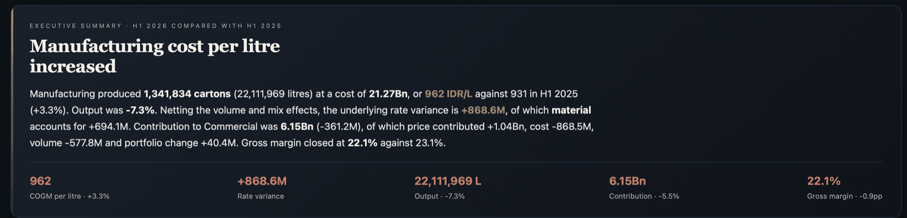
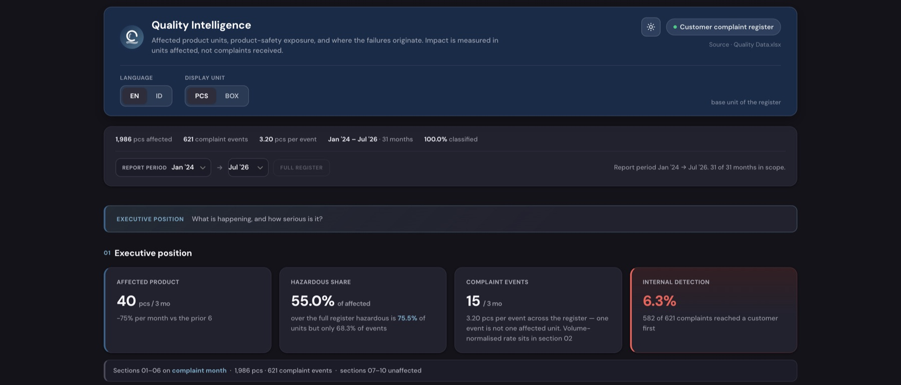

The management system the first three engagements argued for — performance, cost and cause in one view.

System scope
Modules in service10 live · 6 domains

There is no roadmap here, deliberately. An eleventh module needs no change to the first ten, and listing modules that do not exist would say nothing about the system that does.
Analysis was not the missing piece. Production, quality, finance, procurement and people each produced it — daily, weekly, monthly and ad hoc, each in its own file, each complete on its own terms.
What did not exist was a shared management view. The questions that mattered crossed every one of those files: what a unit cost last month, why it moved, and what it would take to move it back is a finance question, a production question and a quality question at once. No file held that question, and no one owned it. By the time the pack was assembled, the month it described was over.
Reporting is a record. A decision needs a comparison, a driver and a consequence — and management time went into building the pack rather than discussing the business.
The constraints were fixed: no engineering team, no platform budget, no server to run one on. Parts of the data foundation genuinely do not exist — no downtime or loss-event data, no in-process quality data, no bill of materials that reconciles with finance material cost. Anything built here had to state those gaps rather than fill them with plausible numbers.
Design around the decision loop rather than around dashboards. Data, performance, diagnosis, decision, action — each stage a question the system has to answer, and each question with something that has to exist before it can be answered. Most reporting stops at performance. The work is in the stages after it.
Two rules shaped the build. Every module is a single self-contained HTML file with its data embedded, so it can be written by anyone, reviewed by opening it, and published without touching the core. And every number names its source.
That made it something the team could extend. A published builder brief sets the contract, and one review gate — beta first, live after — checks that a module runs clean, carries no data it should not, and fits the Terminal before it is published.
Action feeds the next period’s data
Ten modules across six domains, each answering one management question rather than displaying one function’s data. A control tower reads across them rather than down them — factory state, unit economics, cost bridge, product economics, performance matrix, and where the pressure is. Cost per unit decomposes into material, labour, overhead and water, and the bridge reconciles to the rupiah.
The reporting engine closes the loop. It assembles the manufacturing performance publication as a Word document for any period — month, quarter, half, year to date, full year or a custom range — rasterising eleven charts and zipping the package in the browser. The same engine runs from the command line for batches, so the file that was verified is the file the Terminal produces.
Verification is a harness of 46 checks in three groups: browser wiring, reconciliation of every headline figure recomputed independently, and coverage of every period type. It caught water missing from the cost-of-goods composition, where the shares summed to 97% under a total claiming 100%. A separate leak gate scans everything bound for the public site for values from the real dataset before anything ships.
The plant signs in through Cloudflare Access — an email one-time passcode, so there is no password for the system to hold — and Access passes verified identity through to the Worker, which stamps shared records with who made them. Publishing is one command.
The plant now has one management view. Meetings open the Terminal instead of a pack, so the evidence, the driver and the decision are in the same place — at the cadence the business moves rather than the cadence a pack can be built.
How a request travels
The plant team, on a laptop, with no client to install.
Zero Trust, email one-time passcode. No password is held by the system.
Serves the Terminal and its modules as static assets.
SQLite at the edge for shared state — plans saved once, stamped with the verified identity that saved them.
Artefact
The executive report, generated
The view
The executive report is generated, not written.
Eleven charts and a Word package assembled in the browser, with no server and no export step. The two sections it will not write are the two that belong to management.
Key metrics
10
Live modules
6
Domains
46
Verification checks
0
Frameworks or build steps
What this demonstrates
Related work